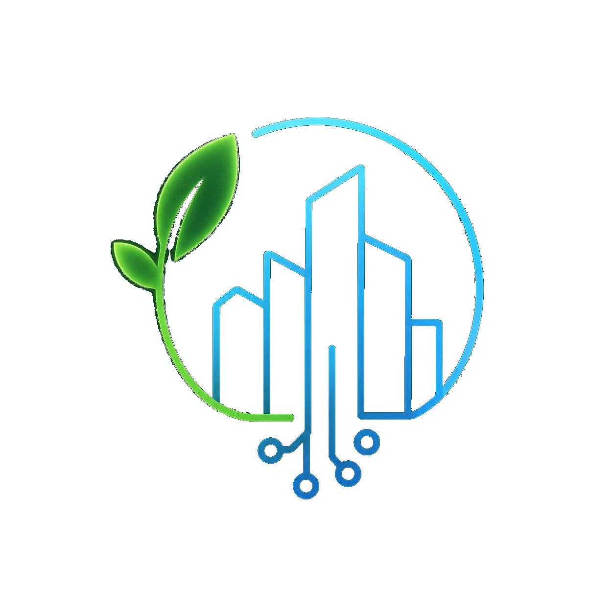

Interpretation Semantics 4 capabilities
Lesson 3 of 4 domains — 4 capabilities: how much to trust it, and what conditions shaped it.
This domain answers: How should this be understood and trusted — source, quality, context?
Source for this lesson
semantic-capabilities-reference.md, section "Interpretation Semantics (4 capabilities)"
1. The question this domain answers
A value can be exactly where you expect (Lesson 2) and still mislead you if you don't know who supplied it, how reliable it is, or what conditions — moving or fixed — were shaping it at the time. This domain carries two of the framework's sharper tie-breakers: source vs. location, and dynamic vs. static context.
2. The four capabilities
| Capability | Question it answers | Reference doc's examples |
|---|---|---|
| Provenance | Which system or actor reported or supplied this information? | Device sensor; control cabinet; weather service; GIS platform; installation records; human operator; Digital Twin; predictive model |
| Measurement Quality | How reliable or accurate is this value? | Accuracy; precision; confidence; completeness; consistency; availability; resolution; uncertainty |
| Operational Context | What dynamic, situational condition is modulating behavior right now? | Weather; rainfall; humidity; temperature; wind; traffic; occupancy; seasonal conditions |
| Physical Context | What static, structural feature of the place affects service outcomes? | Buildings; trees; vegetation; terrain; slopes; orientation; shadows; surface materials |
3. Tie-breaker one: Observation Point vs Provenance
Both can point at "the same device." The difference is what question you're actually asking:
- Observation Point = a position. Where does the thing being observed sit?
- Provenance = a source identity. Who or what supplied this information?
Reference doc's rule: default to Observation Point when a device name could answer either question, unless the sub-observation specifically contrasts sources — device-reported vs. manually entered vs. externally supplied. That contrast is the signal that flips Provenance to Primary.
4. Tie-breaker two: Operational Context vs Physical Context
Both describe "the environment," but on different timescales:
- Operational Context — dynamic, changes moment to moment (weather, traffic, occupancy)
- Physical Context — static, a fixed property of the location (a building, a tree, terrain)
A tree casting a shadow is Physical Context — the tree doesn't move. Today's rainfall reducing sensor accuracy is Operational Context — tomorrow it could be dry. The test is simple: would this still be true a year from now regardless of the weather? If yes, Physical Context. If it depends on today's conditions, Operational Context.
5. Fresh example — a flagged pump reading
| Sub-observation | Primary Capability | Why |
|---|---|---|
| Logged by a technician, not the sensor itself | Provenance | This sub-observation specifically contrasts who supplied it — a human operator, not the automated sensor pipeline. That contrast is what flips Provenance to Primary over Observation Point. |
| Flow sensor reading is low confidence | Measurement Quality | Directly about how reliable the value is. |
| Low confidence caused by heavy rain today | Operational Context | Rain is a moving, situational condition — it modulates trust today, not permanently. |
| Retaining wall blocks sun on the solar panel | Physical Context | The wall isn't going anywhere. It's a fixed structural fact about the site, true regardless of today's weather. |